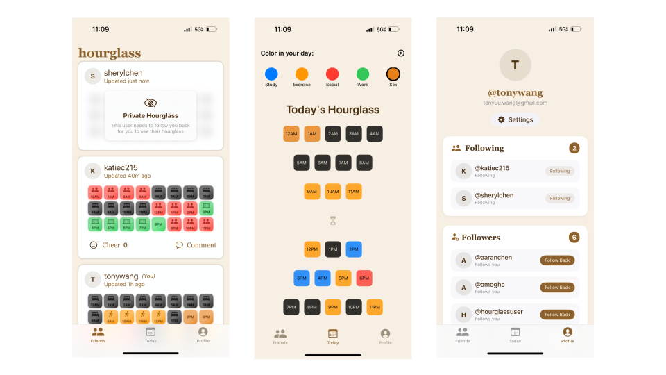
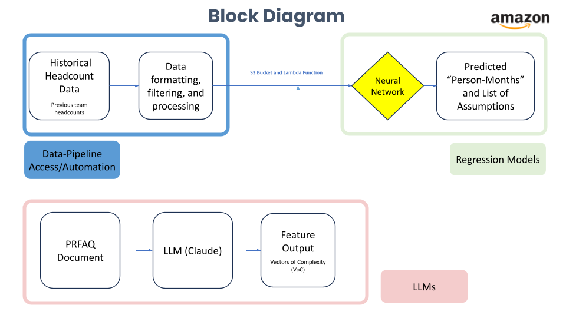
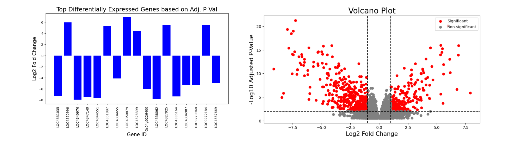
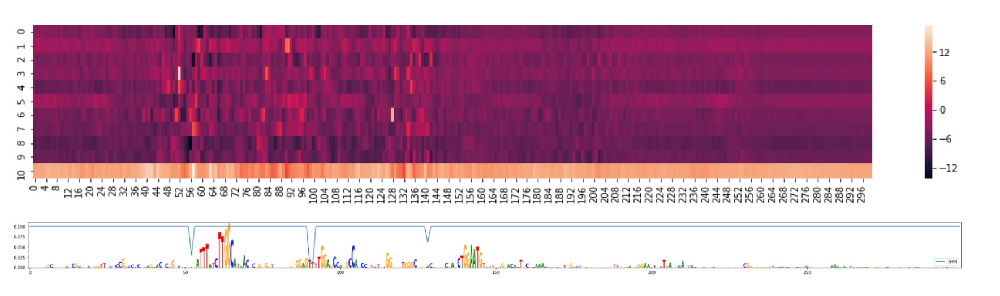
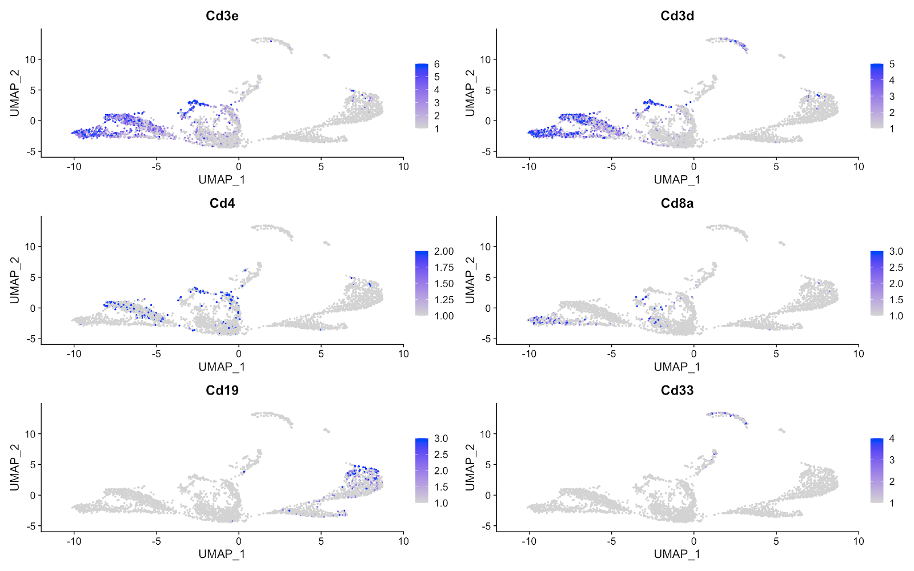

TONY WANG
> studying cs + math @ stanford
past projects
a collection of fun things i've made
Caply (CCPA Compliance Tool)
Akaash and I engineered a tool to streamline California Consumer Privacy Act (CCPA) compliance for SMBs. Caply empowers companies to efficiently identify and purge personal data from their systems, as well as automatically notifying third-party vendors, ensuring adherence to critical privacy regulations.
AEMP Web Scrapers (Stanford Public Interest Technology Lab)
Led a web-scraping project with the Anti-Eviction Mapping Project (AEMP) as part of the Stanford Public Interest Tech (PIT) Lab. This project automates the collection of critical housing data to support AEMP's mission of providing data for fighting housing insecurity.
SEC Analysis Tool
Built an AI web application that allows users to upload SEC filings (such as 10-Ks or 10-Qs) and ask natural-language questions about them. Supports consistent file storage and multiple conversation threading.
Monet (Voice-based Tool for Google Slide Editing)
Developed 'Monet,' a voice-controlled AI tool for seamless presentation editing. This project, created for the OpenAI x Pear VC hackathon, leverages voice commands to manipulate slide content, accelerating and making accessible the editing workflow.
Neurosense (DSM-5 & SAMHSA-informed Crisis Care)
Coded 'Neurosense,' an expert support and crisis care platform informed by DSM-5 and SAMHSA guidelines. This application provides real-time assistance, bridging the gap between individuals in need and professionally-backed mental health advice/resources.
Hourglass (Productivity & Time Management iOS App)
Developed 'Hourglass,' a productivity-tracking iOS application designed to gamify time management. The app fosters motivation through social accountability features and provides visual progress tracking, empowering users to take control of their time.
MultiSport (AI-Powered Sports Analytics)
Designed and implemented 'MultiSport,' a real-time CV system for simultaneously live tracking multiple players in sports footage. The system provides bird's-eye view analytics, offering insights into player movement and team strategy. Implemented Kalman filtering, homography transformation, Canny edge detection, etc.
ACM ML Lab (Avian Species Classification)
As part of the ACM ML Lab, developed 'Bird-ResNet,' which applied deep ResNets to the task of avian species classification from images.
CS44N (Computational Graphics)
Completed a series of projects in computational graphics mentored by Professor Doug James, exploring topics from ray tracing to 3D modeling. Learned a lot about the math behind modern computer graphics.

CharacterGraph (Narrative Analysis Tool)
Got confused keeping track of the characters in Cixin Liu's novels, so I made 'CharacterGraph,' a tool that analyzes a body of text to automatically generate and visualize a graph of character relationships. This provides a super fun at-a-glance graph of narrative structures.
HeadcountAI (AI for Headcount Forecasting)
During my Amazon internship last summer, I designed and proposed an AI Technical Program Manager for project forecasting. I integrated LLMs and standard neural networks to create a more accurate and automated system for workforce planning. I received an Amazon Raising the Bar award for my project!
CS109 (Stanford Open Policing Project Analysis)
Conducted a statistical analysis of data from the Stanford Open Policing Project. I explored patterns and biases in traffic stop data, demonstrating that black and hispanic drivers are more likely to be searched than white drivers. My project got awarded third place in the Stanford Probability Contest!
Microsoft Consulting (Azure Redesign)
Developed design specifications and strategy recommendations through user interviews, competitive analysis, and design testing. Presented to the Azure team at Microsoft.
Indica Rice Genomic Research
As part of the Non-Trivial Fellowship, I used computational gene expression analysis and machine learning to uncover biomarkers for drought resistance in Indica rice. Identified three key hub genes (D2HGDH, DMC1A, and COQ3) with known protein structures, offering tractable targets for improving crop resilience.
TF-CNN Bioinformatics Tool (SAIL Kundaje Lab)
Contributed to computational genomics research during an internship at Stanford's Kundaje Lab (SAIL). Focused on developing and interpreting transformer/CNN models to better understand transcription factor binding motifs.
Myocarditis Bioinformatics Research (Stanford Medicine Sean Wu Lab)
Worked at the Stanford School of Medicine in the Sean Wu Lab, contributing to a CRISPR myocarditis study. Gained hands-on experience in dimensionality reduction and clustering.
